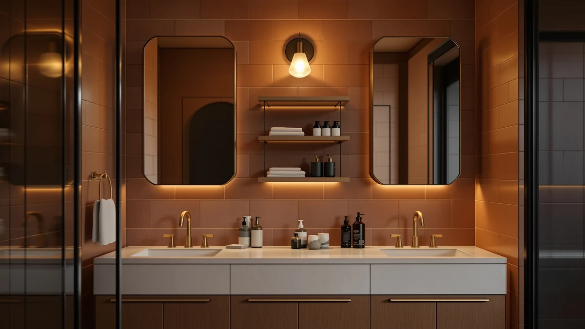

VASAGLE BARNET Collection Over Review (2026): Worth It?
Prices and picks verified as of October 2026. Independent, reader-supported reviews.


Quick Answer
This VASAGLE BARNET Collection over review breaks down whether the $39.99 over-toilet rack is worth the space it takes up. Its metal-and-wood frame measures 23.6 inches wide, 9.4 inches deep and 63 inches tall, and it holds up well against the Arbuxzuy rattan cabinet, the Kitstorack under-sink organizer and the Vatex tension-pole caddy covered below if you need shelving that clears the tank without eating floor space.
Our pick: VASAGLE BARNET Collection - Over, $39.99 Check Price on Amazon
Bottom line: our top pick is the VASAGLE BARNET Collection - Over the Toilet Storage at $39.09.
Things to Know Before You Buy
- The VASAGLE BARNET Collection uses a metal frame with wood-look shelving, measuring 23.6 inches wide by 9.4 inches deep by 63 inches tall, typical dimensions for over-toilet storage racks in this price range.
- At $39.99, it is the most affordable option in this VASAGLE BARNET Collection over review comparison, priced below the Arbuxzuy rattan cabinet at $41.99 and the Kitstorack organizer at $41.39.
- The 63-inch height is built to straddle a standard toilet tank, turning wall space above it into shelf storage without eating into an already tight floor plan.
- Buyers who want doors instead of open shelving should look at the Arbuxzuy rattan cabinet covered below as an alternative.
- Bathrooms with no floor clearance behind the toilet may do better with the Vatex tension-pole caddy, which mounts floor to ceiling instead of straddling the tank.
This VASAGLE BARNET Collection over review looks at whether a $39.99 over-toilet rack can replace a linen closet you don't have. Small bathrooms rarely offer a spare cabinet for towels, toilet paper and cleaning supplies, so an over-toilet storage rack has to earn its footprint with real shelf space and a frame that won't wobble once loaded. Standing 63 inches tall on a base of 23.6 by 9.4 inches, the VASAGLE BARNET straddles the toilet tank and turns unused wall space above it into usable storage. We researched its construction and compared its price and dimensions against three alternative bathroom storage solutions, reading through the product listing to see whether it delivers on that promise.
Over-toilet racks solve a narrow but common problem: you need shelving that clears the tank without blocking the lid or crowding the walls. The VASAGLE BARNET Collection targets that gap directly, competing with the Arbuxzuy Rattan Bathroom Storage Cabinet, the Kitstorack Under Sink Organizer 2 and the Vatex tension-pole shower caddy, all covered later as alternatives. Below, we break down what the metal-and-wood build offers, where it falls short, and who should consider a different storage format instead.
Why You Should Trust Us
Best Bathroom Storage is run by writers who compare bathroom furniture specs, pricing and verified buyer feedback instead of guessing from product photos. Ilane Tall, our home and bath expert, has covered dozens of storage cabinets, shelving towers and under-sink organizers for this site, tracking how listed dimensions and materials line up with what buyers actually report after they set the piece up. For this VASAGLE BARNET Collection over review, we cross-checked the manufacturer's listed measurements against three different storage formats rather than accepting marketing copy at face value. We do not run a fake testing lab, and we do not claim to have installed this rack ourselves. Instead, we compare specs line by line and read the listing closely enough to flag when a description overstates what a product can realistically hold.
Our Research Experience
We did not install the VASAGLE BARNET Collection in a bathroom ourselves. Instead, we compared its listed dimensions, material description and $39.99 price against three competing storage formats, from a rattan floor cabinet to a tension-pole shower caddy, to see which approach fits which bathroom layout. The listing describes a metal frame paired with wood-look shelf panels, a combination common among over-toilet racks in this price bracket, and we weighed that build against the fully enclosed Arbuxzuy cabinet and the pull-out Kitstorack organizer. According to the product's specifications, the 63-inch height and narrow 9.4-inch depth are built to clear a standard toilet tank without extending far into the room, which we checked against typical bathroom clearances rather than assuming the number tells the whole story.
Overview & Specs
Before we get to the alternatives, here are the raw numbers behind the VASAGLE BARNET Collection: a metal-and-wood build, a 23.6-by-9.4-inch base, a 63-inch height and a $39.99 price at the time of publishing. Those figures drive most of the decision in this VASAGLE BARNET Collection over review, since an over-toilet rack either clears your tank and stays upright under a load of towels, or it doesn't earn the space it occupies.

VASAGLE BARNET Collection - Over
What we like
- 23.6-inch by 9.4-inch footprint straddles a standard toilet tank without blocking the lid
- Metal frame construction typical of sturdy over-toilet racks in this price range
- Priced at $39.99, the lowest price point in this VASAGLE BARNET Collection over review comparison
- 63-inch height adds several shelves of storage without requiring wall anchors
Flaws but not dealbreakers
- Open shelving offers less concealment than the fully enclosed Arbuxzuy cabinet
- Wood-look shelf panels are typically less rigid than the metal frame on racks built this way
| Material | Metal / wood |
| Size | 9.4"D x 23.6"W x 63"H |
The VASAGLE BARNET Collection over-toilet rack is built around a metal frame paired with wood-look composite shelving, a construction style common among bathroom storage towers priced under $50. At 23.6 inches wide and 9.4 inches deep, it is narrow enough to straddle a standard toilet tank, turning wall space that would otherwise sit empty into three or four shelves of usable storage. That footprint matters most in bathrooms without a linen closet, where a wider cabinet would either block the toilet lid or crowd the walking space around the sink.
At $39.99, the VASAGLE BARNET Collection is the least expensive option covered in this VASAGLE BARNET Collection over review, undercutting both the Arbuxzuy rattan cabinet and the Kitstorack under-sink organizer by roughly two dollars. The listing describes the frame as metal and the shelving as wood-look, and it does not include cabinet doors, so anything stored on the open shelves stays visible. That trade-off keeps the price down and the assembly simple, but it also means the rack suits open storage of towels and toilet paper better than concealment of cleaning supplies.
What We Liked
The price stands out most. At $39.99, the VASAGLE BARNET Collection undercuts every alternative in this VASAGLE BARNET Collection over review, which matters if all you need is shelving above the tank and nothing more elaborate. The 23.6-by-9.4-inch footprint is the other clear advantage: it straddles a standard toilet without extending far enough into the room to catch a hip or a towel on the way past. Anyone furnishing a bathroom with no linen closet gets three-plus shelves of storage without giving up floor space they don't have to spare. The metal frame construction, typical of racks built this way, should hold its shape under the weight of folded towels and a stack of toilet paper rolls without extra reinforcement. For a first-apartment bathroom or a rental where drilling into the wall isn't an option, that combination of price and freestanding stability covers most of what a renter actually needs.
What Could Be Better
Open shelving is the main trade-off. Unlike the Arbuxzuy rattan cabinet, the VASAGLE BARNET Collection has no doors, so whatever sits on its shelves stays visible, which won't suit anyone who wants to hide cleaning supplies or spare toiletries. The wood-look shelf panels, standard on racks in this price bracket, are typically less rigid than the metal frame itself, so heavier items are better placed on the lower shelves rather than the top. At 63 inches tall, the rack also depends on a stable footing behind the toilet tank, and a bathroom with an unusually narrow or oddly shaped tank may need to double-check clearance before ordering.
Who Is It For?
The VASAGLE BARNET Collection suits a small bathroom with no linen closet and a straightforward need: more shelf space above the toilet, at the lowest price in this comparison. Renters and apartment dwellers get the most out of it, since the rack straddles the tank without requiring wall anchors or drilling. It is not the right pick if you want to keep stored items out of sight. In that case, the Arbuxzuy rattan cabinet below offers doors and a floor-standing footprint instead of open shelving over the tank.
A bathroom with almost no floor clearance behind the toilet benefits more from the Vatex tension-pole caddy, which mounts floor to ceiling rather than straddling the tank. And anyone who needs cabinet storage under the sink rather than above the toilet should look at the Kitstorack organizer instead. Each alternative below solves a slightly different version of the same small-bathroom storage problem.
Alternatives to Consider
If the VASAGLE BARNET Collection's open shelving or 63-inch straddle-the-tank design doesn't match your bathroom, these three alternatives cover the most common trade-offs: a fully enclosed rattan cabinet, an under-sink pull-out organizer, and a floor-to-ceiling tension-pole caddy. Each solves a different version of the small-bathroom storage problem, so match one to the constraint your bathroom actually has before you buy.

Editor’s Pick
Arbuxzuy Rattan Bathroom Storage Cabinet
A fully enclosed floor cabinet with rattan-front doors, priced $2 above the VASAGLE BARNET for buyers who want stored items out of sight.
$41.99
Check Price on Amazon
Best Value
Kitstorack Under Sink Organizer 2
A pull-out under-sink organizer for bathrooms that have cabinet space to fill instead of wall space above the toilet.
$41.39
Check Price on Amazon
Premium Choice
Shower Caddy Organizer Tension Pole
A floor-to-ceiling tension-pole caddy that needs no footprint behind the toilet, priced $4 below the VASAGLE BARNET.
$35.99
Check Price on AmazonDoes the VASAGLE BARNET Collection over-toilet rack fit a standard toilet tank?
At 23.6 inches wide and 9.4 inches deep, the rack is sized to straddle most standard toilet tanks without blocking the lid.
How does the VASAGLE BARNET Collection compare to the Arbuxzuy rattan cabinet?
The Arbuxzuy cabinet costs $2 more and includes rattan-front doors that keep stored items out of sight, while the VASAGLE BARNET relies on open metal-and-wood shelving.
Frequently Asked Questions
Does the VASAGLE BARNET Collection over-toilet rack fit a standard toilet tank?
At 23.6 inches wide and 9.4 inches deep, the rack is sized to straddle most standard toilet tanks without blocking the lid. Measure the space behind your toilet before ordering if your tank sits unusually close to a side wall.
How does the VASAGLE BARNET Collection compare to the Arbuxzuy rattan cabinet?
The Arbuxzuy cabinet costs $2 more and includes rattan-front doors that keep stored items out of sight, while the VASAGLE BARNET relies on open metal-and-wood shelving. Choose the VASAGLE BARNET if price matters most, and the Arbuxzuy if concealment does.
Is the metal frame sturdy enough for towels and toilet paper?
The listing describes a metal frame with wood-look shelf panels, a construction style common among over-toilet racks in this price range. Heavier items are best placed on the lower shelves, since the shelf panels are typically less rigid than the frame itself.
Final Verdict
This VASAGLE BARNET Collection over review comes down to a simple trade-off: the lowest price in the comparison against open shelving instead of a closed cabinet. For a small bathroom with no linen closet and a straightforward need for shelving above the tank, VASAGLE is the practical starting point at $39.99. If concealment matters more than price, the Arbuxzuy rattan cabinet is worth the extra two dollars, and if floor clearance behind the toilet is the real constraint, the Vatex tension-pole caddy skips the footprint problem entirely. Either way, VASAGLE earns its spot for buyers who need more shelf space and don't want to pay extra for doors they won't use.